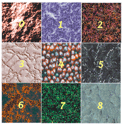
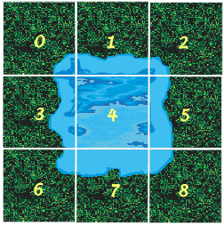
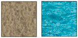
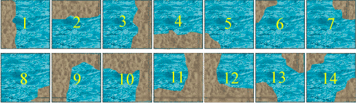
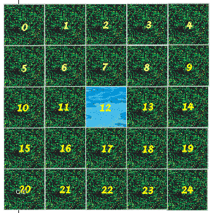
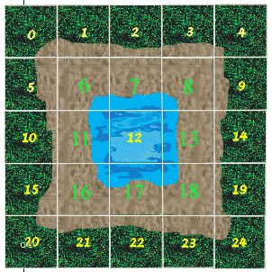
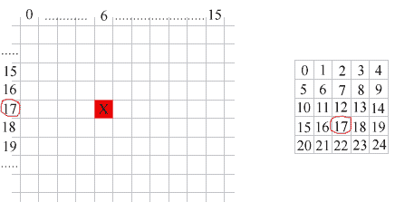
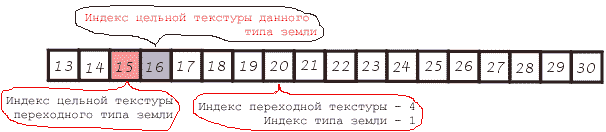
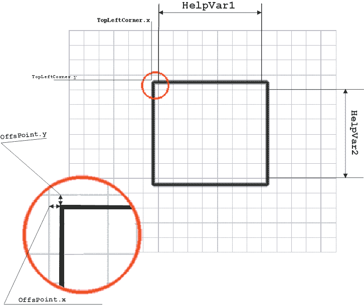

Создание редактора карт в стратегиях
типа WarCraft
Довелось
мне как-то озадачиться идеей написать редактор
карт для моей новой игры. Скажу сразу, что задача
эта не из простых. Приступим сразу к делу. Как
правило, в двумерных стратегических играх типа
Warcraft, Heroes of Might and Magic, Z и т. д. карты строятся из
ячеек. Иными словами, карта - это матрица с
некоторыми числовыми значениями внутри ячеек.
Эти значения есть номера текстур( растровых
картинок с изображениями земли, воды, камней и т.
д., из которых и будет склеиваться Ваш уникальный
ландшафт )

Рисунок
1
На рисунке
изображена ну очень маленькая карта с размером
матрицы 3х3. Для создания подобной карты задается
двумерный массив ( Map : Array[3,3] of Byte ), записываются,
каким-либо образом, в каждую ячейку порядковые
номера текстур и при выводе карты на экран эти
номера читаются из массива. Ну например:
...
For i := 0 to 2 do
For j := 0 to 2 do
Begin
Number := Map[i,j];
X := J * TextureWidth;
Y := i * TextureHeight;
DrawTexture(X,Y,Number);
End;
...
Где Number - номер
текстуры,
Х - координата текстуры на экране,
Y - то же самое,
DrawTexture - некая процедура вывода текстуры на экран.
Совет!!!
Если Вам заранее не известно из какого
количества ячеек будет состоять Ваша карта, не
используйте Tlist в Tlist'e для ее создания. Советую
воспользоваться PbyteArray.
( GetMem(PbyteArray,MapWidth*MapHeight*SizeOf(Тип ячейки)) ).
Тип ячейки в нашем случае - Byte. Обращение в этом
случае будет таким: Number := PbyteArray[Y*MapWidth + X]; Где X,Y -
координаты нужной ячейки в матрице.
Все что мы
рассмотрели выше подходит для карт на основе
только лишь одного типа земли. Взгляните на
рисунок расположенный выше. Вы увидите, что
поскольку все текстуры разные - карта как-бы
состоит из квадратиков. Кому она такая нужна?
Хочется чтобы эти текстуры плавно перетекали
друг в друга. Отсюда есть три выхода:
- Создавать карту из
текстур мало отличающихся друг от друга и при
рисовании карты выбирать их случайным образом.
- Налепить целю кучу
"пересекающихся" между собой текстур и
класть их на карту вручную.
- Так же налепить ту
же кучу текстур и написать программу позволяющую
автоматически распределять их на карте.
Первый
способ не очень интересен. Он скорее подходит для
создания ролевых игр. Где, как правило,
присутствует базовый тип земли, а все остальное,
такое как вода, камни, травка представляется
объектами. Второй способ легок по реализации, но
очень утомительно будет потом создавать карты в
таком редакторе.
Посмотрите
на рисунок. Если у Вас вся карта состоит из
текстур с травой, а

Рисунок
2
Вам надо добавить
участок воды, то мы видим, что для того чтобы
добиться плавного перетекания Вам придется
добавить еще 8 промежуточных текстур окружающих
текстуру с водой. Если делать это вручную( по
второму способу ), то это займет слишком много
времени и сил. Поэтому нам второй способ тоже не
подходит. Мы остановимся на третьем способе и
будем создавать карту подобно тому, как это
происходит в WarCraft'e. При добавлении текстуры на
карту( фактически - записи номера текстуры в
определенную ячейку матрицы ), окружающие ее
текстуры будут рассчитываться автоматически.
Как этого добиться?
Я достаточно долго
ломал голову над этой проблемой. Я пытался найти
какой-нибудь способ позволяющий не утруждать
компьютер громоздкими вычислениями и работать
максимально быстро и эффективно. Один раз я даже
вывел формулу, по которой рассчитывались новые
значения ячеек, но она увы имела ограниченное
действие( только 2 типа земли ) и плохо подходила
для создания карт, где требуется максимальное
разнообразие. Но достаточно лирики, давайте
вернемся к нашим баранам.
Прежде всего
необходимо выяснить - какое количество
переходных текстур нам понадобится для
обеспечения плавного перетекания между двумя
типами земель. Здесь есть свои тонкости.
Представим, что у
нас имеется два типа земли: ВОДА и ЗЕМЛЯ, тогда: Во-первых
нам понадобятся две базовых текстуры , это
текстуры полностью заполненные водой или землей.

Рисунок
3
Во вторых
нам понадобятся промежуточные текстуры. Сколько
их нужно мы сейчас посчитаем.

Рисунок
4
Оказалось,
что для плавного перетекания двух земель друг в
друга надо 14 промежуточных текстур, плюс две
базовых. Итого 16. Всякий программист знает, что
это хорошая цифра.
Возможно
кто-то спросит: А зачем так много? Не достаточно
ли 8 текстур, как на рисунке 2 - где трава
пересекается с водой? Нет не достаточно. Ведь
ситуации бывают разные. Окружающие ячейки могут
быть не полностью забиты травой ( в данном случае
землей ), и тогда понадобятся дополнительные
текстуры.
Тогда может
последовать другой вопрос: Почему так мало
текстур? Где например текстуры когда вода с трех
сторон окружена землей, и с четырех, и другие? Не
следует ли предусмотреть все случаи?
И это
правильный вопрос, но здесь все зависит от
конкретной реализации алгоритма
автоматического вычисления необходимой
текстуры. В моем примере он реализован так, что
остальные текстуры не нужны. Объясню наглядно:
1.
Текстуры воды окруженные землей с двух
противоположных сторон превращаются в базовую
текстуру земли ( в текстуру заполненную только
землей ). Соответственно то же самое происходит
когда вода окружена с трех или четырех сторон.
2. Текстуры
воды окруженные с двух уголков на одной стороне
превращаются в текстуры полностью окруженные
землей с одной стороны.( если уголки с трех сторон,
то вода оказывается окружена полностью с двух
сторон, если уголков 4, то вода превращается в
землю совсем).

Теперь, я надеюсь,
все ясно. С помощью применения подобной техники
количество промежуточных текстур удалось
уменьшить ровно в два раза! Это существенная
экономия памяти, особенно если учесть, что типов
земель будет больше. Кстати в WarCraft'e, если я не
ошибаюсь, используется такой же набор текстур.
Ну хорошо, теперь
давайте еще посчитаем. Для "слияния" двух
земель нам понадобилось 16 текстур. Но если к
земле и воде добавить еще траву, то придется
создавать также переходные текстуры для трава-земля
и трава-вода. Это еще 32 текстуры. Добавим еще
каменистую почву( надо же сделать карту
разнообразнее). Еще 48 текстур. И так далее и так
далее. А если мы хотим сделать несколько видов
одной и той же текстуры( опять таки для
разнообразия )? Количество текстур растет как на
дрожжах. Что делать?
Но тут на помощь
пришел опять-таки старый, добрый, затертый до дыр
мышкой WarCraft. Никогда не замечали, что если в
WarCraft'e, вернее в War Editor'e, "кладешь" воду на
траву, то между травой и водой появляется
прослойка земли? Вот и я заметил.

Посмотрите
на эти два рисунка. Из них видно, что вода
граничит только с землей, трава тоже граничит
только с землей. Земля в данном случае является
"переходным" типом земли. Достаточно
создать текстуры вода-земля, трава-земля, камни-земля,
песок-земля и т. д. По 16 штук на каждую землю и все.
Можно больше не беспокоится. Земли будут
соединяться между собой через "переходный"
тип земли. Спасибо WarCraft'у.
Итак, с
количеством текстур и тем какими они должны быть
мы разобрались, и вот наконец-то мы приступаем к
самой реализации данной задачи.
Условимся, что:
1. Ячейку с номером
12 я буду называть активной или текущей.
2. Землю которой мы рисуем я также буду называть
активной или текущей.
3. Землю которая была прежде была в ячейке 12 я буду
называть прежней.
4. Ячейки под номерами 6,7,8,11,13,16,17,18 я буду называть
первым кругом.
5. Ячейки под номером 0,1,2,3,4,5,9,10,14,15,19,20,21,22,23,24 я буду
называть вторым кругом.
6. Все текстуры имеющие в себе участок некоторого
типа кроме переходного есть эта земля. То есть, к
примеру, ячейки в первом круге - это вода.(см.
Рисунок 6б)
Пусть для
данного примера у нас будет три типа земли: ВОДА,
ТРАВА, КАМНИ. Плюс переходный тип - ЗЕМЛЯ. Нам
понадобится 48 текстур. Почему 48, а не 64? - спросите
вы, - ведь типов-то 4. Потому, что переходный тип и
так есть в каждом из трех первых типов, в
промежуточных текстурах.
Допустим,
что текстуры у Вас будут храниться в компоненте
ImageList, для нашего случая это удобнее всего.
Разместим мы их следующим образом: за номером 0
будет располагаться цельная текстура воды,
номера 1 - 14 займут промежуточные текстуры ВОДА-ЗЕМЛЯ
(как на Рисунке 4), номер 15 займет цельная текстура
ЗЕМЛИ. Следующий элемент ТРАВА займет номера 16 - 31
по тому же принципу, элемент КАМНИ займет номера
с 32 - 47. Как Вы наверное заметили, номера 15,31,47
оказываются заняты одинаковыми цельными
текстурами земли. Их можно сделать немного
отличающимися друг от друга для обеспечения
большего разнообразия, а затем выбирать
случайным образом.
Введем
базовые индексы типов земель. Пусть базовый
индекс воды равен 0, базовый индекс травы равен 1,
камней - 2. Тогда, узнав порядковый номер текстуры,
мы можем выяснить какому типу земли она
принадлежит, достаточно разделить целочисленным
делением (Div) порядковый номер текстуры на 16. Если
же мы разделим этот номер делением по остатку (Mod)
на 16, то узнаем смещение или номер промежуточной
текстуры внутри интервала номеров
принадлежащего данному типу земли. Например, мы
обратились к ячейке и получили номер 23. Поделив
этот номер целочисленным делением на 16 получим 1.
Это тип земли - ТРАВА. Поделив делением по модулю
остатка на 16 получим 7. Это номер промежуточной
текстуры.(См. Рисунок 4, только в данном случае
была бы трава с землей) Заметьте, если бы вместо 7
мы получили 0, это означало бы цельную текстуру
данной земли, 15 означало бы цельную текстуру
переходного типа - ЗЕМЛЯ.
Теперь
давайте немного попишем:
PMap : PbyteArray; //
указатель на матрицу содержащую нашу карту
WorldWidth, WorldHeight : Integer; // Ширина и высота карты в
ячейках
Procedure CreateNewMap(WorldWidth,WorldHeigth : Integer);
Begin // Выделение памяти под матрицу
GetMem(pMap,WodrldWidth*WorldHeight);
// Заполнение этого участка нулями
FillChar(pMap,WorldWidth*WorldHeight,0);
End;
funcion GetElement(x,y : Integer):byte;
Begin // Получить значение ячейки
Result := pMap[y*WorldWidth + x];
End;
Procedure PutElement(x,y : Integer; Index : Byte);
Begin // Записать значение в ячейку
PMap[y*WorldWidth + x] := Index;
End;
Function GetBaseIndex(Index : byte): byte;
Begin // Получить тип земли в виде номера(индекса)
Result := Index div 16;
End;
Function GetAdditionalIndex(Index : byte):byte;
Begin // Получить номер переходной текстуры
Result := Index mod 16;
End;
Вот.
Вспомогательные функции мы написали, перейдем к
рассмотрению технологии.
Посмотрите на
Рисунок 6(б). Видно, что когда мы заменяем значение
одной ячейки, эти изменения влияют, как на первый
так и на второй круги ячеек. Возникает резонный
вопрос: не случится ли такой ситуации, когда
помещение на карту новой текстуры потребует
перерисовки всей карты, так, словно кто-то бросил
камень в воду? Если следовать принципам
изложенным в этой статье, то не случится. Я
проверял все варианты. Изменения касаются лишь
первого и второго круга. Кто не верит, может
проверить, посчитать, прикинуть, но это займет
много времени. Теперь мы подходим к главному - по
какому принципу рассчитывать новые значения
изменяемых текстур. Возможно я Вас немного
удивлю, но рассчитывать нам больше ничего не
придется. Нам понадобится создать три массива (таблицы)16
на 25 элементов, записать в них заранее
расчитанные значения, а затем их считывать в ходе
выполнения программы. Сейчас поясню.
Поскольку в общей
сумме у нас по максимуму может измениться 25
элементов на карте (Рисунок 6(б)), мы создадим
вспомогательную матрицу 5х5, куда будем считывать
с карты значения соответствующих ячеек. Затем мы
изменим значения в этой матрице и поместим ее
снова на карту откуда взяли.
В каждой ячейке
может быть следующее значение:
Index + GroundIndex*16 , где
Index - число от 0 до 15
указывающее на номер переходной текстуры. GroundIndex
- число от 0 до 2 указывающее на тип земли - ВОДА,
ТРАВА, КАМНИ
Итак мы знаем номер
лежащей в ячейке переходной текстуры (GetAdditionalIndex),
мы также знаем номер этой ячейки в матрице 5х5.
Этого вполне достаточно. Мы создадим массив-таблицу
ширина которого равна количеству возможных
переходных текстур 16, а высота равна количеству
ячеек в матрице 5х5=25. Дальше мы действуем
следующим образом: Считываем в матрицу 5х5
участок карты центром которого является ячейка в
которую мы "кладем" новую землю, в ячейку 12
кладем цельную текстуру той земли которой мы
рисуем. Затем для всех ячеек матрицы 5х5 кроме 12-ой
делаем следующее: Поучаем номер переходной
текстуры (GetAdditionalIndex) и обращаемся к таблице 16х25.
Где номер переходной текстуры это положение
ячейки таблицы 16х25 по горизонтали, а номер

Рисунок
7
ячейки в
матрице 5х5 это положение ячейки таблицы 16х25 по
вертикали. На рисунке 7 , цифра 6 по горизонтали
это GetAdditionalIndex от текстуры, которая прячется в
матрице 5х5 в ячейке номер 17, а "Х" в красной
клетке это тот самый новый номер для этой
текстуры. Фактически смысл сводится к следующему:
посмотрели какая была текстура - заглянув в
таблицу, узнали какая стала.
Вы наверное
спросите - а как узнать какие значения должны
быть в таблице 16х25? Никак. Они рассчитываются в
уме и записываются в таблицу ручками. Но вы
можете не задумываться над этим, я уже рассчитал
и записал их в своем примере. Смотрите в
исходниках.
Кстати в
тексте статьи я упоминал о том, что нам придется
создать три таблицы 16х25. Я не оговорился. Дело в
том, что у нас возможны три варианта, когда
значения одной и той же ячейки в таблице должны
быть разными:
1. Активная земля
равняется прежней земле. Например, мы рисуем
ТРАВОЙ, а в рассчитываемой ячейке тоже ТРАВА или
ТРАВА с ЗЕМЛЕЙ.
2. Активная земля не равна прежней земле. Например,
мы рисуем ТРАВОЙ, а в рассчитываемой ячейке ВОДА
или ВОДА с ЗЕМЛЕЙ.
3. Рисуем переходным типом земли - ЗЕМЛЯ.
Если кому-нибудь еще что-то не понятно, то надеюсь
после рассмотрения исходных текстов программы
все встанет на свои места.
Пример написан на
Delphi 3 Professional, с использованием компонент
библиотеки DelphiX для
DirectX 6.0
Модуль MapDat:
// Определение класса Matrix5
Type TMatrix5 = class(TObject)
private
Matrix : array[0..4,0..4] of byte;
Vector : array[0..24] of byte;
public
function GetBaseIndex( ElementIndex : Integer ): Integer;
Function GetAdditionalIndex( ElementIndex : Integer ): Integer;
procedure Fill(X,Y : Integer);
procedure Place(X,Y : Integer);
procedure Culculate(X,Y : Integer; BrushIndex : Integer );
procedure Draw(X,Y : Integer; BrushIndex : Integer );
end;
Внутри класса
определены переменные в виде матрицы 5х5 и
вектора. Некогда я думал, что это упростит
написание программы, сейчас я думаю, что можно
воспользоваться только вектором. Методы GetBaseIndex и
GetAdditionalIndex мы уже рассматривали, рассмотрим
остальные:
Метод Fill(X,Y : Integer);
procedure TMatrix5.Fill(X,Y : Integer);
var i,j : Integer;
begin for j := 0 to 4 do
for i := 0 to 4 do
Matrix[i,j] := MainForm.GetElement(X - 2 + i,Y - 2 + j);
for j :=0 to 4 do
for i := 0 to 4 do
Vector[j*5 + i] := Matrix[i,j];
end;
Заполняет матрицу
и вектор 25-ю элементами карты. Х,Y - указывает на
центральный элемент.
Метод Place(x,y :
Integer);
procedure TMatrix5.Place(X,Y : Integer);
var i,j : Integer;
begin
for j := 0 to 4 do
for i := 0 to 4 do
Matrix[i,j] := Vector[j*5 + i];
for j := 0 to 4 do
for i := 0 to 4 do
MainForm.PutElement(X - 2 + i,Y - 2 + j, Matrix[i,j] );
end;
Выполняет
процедуру обратную методу Fill. То есть кладет
матрицу 5х5 на карту.
Метод Draw(X,Y : Integer;
BrushIndex : Integer);
procedure TMatrix5.Draw(X,Y : Integer; BrushIndex : Integer);
begin Self.Culculate(X,Y,BrushIndex);
Self.Place(X,Y);
end;
Выполняет методы
Culculate , а затем Place. X,Y - указывают центральный
элемент в матрице 5х5, BrushIndex - индекс активной
земли. (0-вода,1-трава,2-камни,3- переходный тип -
земля).
Прежде чем перейти
к основному методу данного модуля - Culculate, покажу
вам созданные таблицы.
const BasicTable :
array[0..24,0..15] of byte = (
(16,16,16,16,16,16,16,16,16,16,16,16,16,16,16,16),
(16,16,16,16,16,16,16,16,16,16,16,16,16,16,16,16),
(16,16,16,16,16,16,16,16,16,16,16,16,16,16,16,16),
(16,16,16,16,16,16,16,16,16,16,16,16,16,16,16,16),
(16,16,16,16,16,16,16,16,16,16,16,16,16,16,16,16),
(16,16,16,16,16,16,16,16,16,16,16,16,16,16,16,16),
( 9, 1, 6, 8, 4, 5, 6,15, 8, 9, 1,14, 4, 5,14,16),
( 1, 1, 6,15, 5, 5, 6,15,15, 1, 1, 6, 5, 5, 6,16),
(10, 1, 2, 7,15, 5, 6, 7,15, 1,10, 2, 7,13, 6,16),
(16,16,16,16,16,16,16,16,16,16,16,16,16,16,16,16),
(16,16,16,16,16,16,16,16,16,16,16,16,16,16,16,16),
( 4, 5,15, 8, 4, 5,15,15, 8, 4, 5, 8, 4, 5, 8,16),
(16,16,16,16,16,16,16,16,16,16,16,16,16,16,16,16),
( 2, 6, 2, 7,15,15, 6, 7,15, 6, 2, 2, 7, 7, 6,16),
(16,16,16,16,16,16,16,16,16,16,16,16,16,16,16,16),
(16,16,16,16,16,16,16,16,16,16,16,16,16,16,16,16),
(12, 5, 7, 3, 4, 5,15, 7, 8, 4,13, 3,12,13, 8,16),
( 3,15, 7, 3, 8,15,15, 7, 8, 8, 7, 3, 3, 7, 8,16),
(11, 6, 2, 3, 8,15, 6, 7, 8,14, 2,11, 3, 7,14,16),
(16,16,16,16,16,16,16,16,16,16,16,16,16,16,16,16),
(16,16,16,16,16,16,16,16,16,16,16,16,16,16,16,16),
(16,16,16,16,16,16,16,16,16,16,16,16,16,16,16,16),
(16,16,16,16,16,16,16,16,16,16,16,16,16,16,16,16),
(16,16,16,16,16,16,16,16,16,16,16,16,16,16,16,16),
(16,16,16,16,16,16,16,16,16,16,16,16,16,16,16,16));
EqualTable : array[0..24,0..15]
of byte = ( (16,16,16,16,16,16,16,16,16,16,16,16,16,16,16,16),
(16,16,16,16,16,16,16,16,16,16,16,16,16,16,16,16),
(16,16,16,16,16,16,16,16,16,16,16,16,16,16,16,16),
(16,16,16,16,16,16,16,16,16,16,16,16,16,16,16,16),
(16,16,16,16,16,16,16,16,16,16,16,16,16,16,16,16),
(16,16,16,16,16,16,16,16,16,16,16,16,16,16,16,16),
(16,10,16,16,12,13, 2,16, 3, 0,16,16,16,16,11, 7),
(16, 0,11,16,12,12,11, 3, 3, 0, 0,16,16,12,11, 3),
(16, 9,11,16,16, 4,14, 3,16,16, 0,16,16,12,16, 8),
(16,16,16,16,16,16,16,16,16,16,16,16,16,16,16,16),
(16,16,16,16,16,16,16,16,16,16,16,16,16,16,16,16),
(16,10,16,11, 0,10, 2, 2,11, 0,16,16, 0,10,11, 2),
(16,16,16,16,16,16,16,16,16,16,16,16,16,16,16,16),
(16, 9, 0,12,16, 4, 9,12, 4,16, 0, 0,16,12, 9, 4),
(16,16,16,16,16,16,16,16,16,16,16,16,16,16,16,16),
(16,16,16,16,16,16,16,16,16,16,16,16,16,16,16,16),
(16,16,16,11, 9, 1,16, 2,14,16,16,16, 0,10,16, 6),
(16,16,10, 0, 9, 1, 1,10, 9,16,16, 0, 0,10, 9, 1),
(16,16,10,12,16,16, 1,13, 4,16,16, 0,16,16, 9, 5),
(16,16,16,16,16,16,16,16,16,16,16,16,16,16,16,16),
(16,16,16,16,16,16,16,16,16,16,16,16,16,16,16,16),
(16,16,16,16,16,16,16,16,16,16,16,16,16,16,16,16),
(16,16,16,16,16,16,16,16,16,16,16,16,16,16,16,16),
(16,16,16,16,16,16,16,16,16,16,16,16,16,16,16,16),
(16,16,16,16,16,16,16,16,16,16,16,16,16,16,16,16));
NotEqualTable :
array[0..24,0..15] of byte = (
( 9, 1, 6, 8, 4, 5, 6,15, 8, 9, 1,14, 4, 5,14,15),
( 1, 1, 6,15, 5, 5, 6,15,15, 1, 1, 6, 5, 5, 6,15),
( 1, 1, 6,15, 5, 5, 6,15,15, 1, 1, 6, 5, 5, 6,15),
( 1, 1, 6,15, 5, 5, 6,15,15, 1, 1, 6, 5, 5, 6,15),
(10, 1, 2, 7, 5, 5, 6, 7,15, 1,10, 2,13,13, 6,15),
( 4, 5,15, 8, 4, 5,15,15, 8, 4, 5, 8, 4, 5, 8,15),
(23,23,23,23,23,23,23,23,23,23,23,23,23,23,23,23),
(19,19,19,19,19,19,19,19,19,19,19,19,19,19,19,19),
(24,24,24,24,24,24,24,24,24,24,24,24,24,24,24,24),
( 2, 6, 2, 7,15,15, 6, 7,15, 6, 2, 2, 7, 7, 6,15),
( 4, 5,15, 8, 4, 5,15,15, 8, 4, 5, 8, 4, 5, 8,15),
(18,18,18,18,18,18,18,18,18,18,18,18,18,18,18,18),
(16,16,16,16,16,16,16,16,16,16,16,16,16,16,16,16),
(20,20,20,20,20,20,20,20,20,20,20,20,20,20,20,20),
( 2, 6, 2, 7,15,15, 6, 7,15, 6, 2, 2, 7, 7, 6,15),
( 4, 5,15, 8, 4, 5,15,15, 8, 4, 5, 8, 4, 5, 8,15),
(22,22,22,22,22,22,22,22,22,22,22,22,22,22,22,22),
(17,17,17,17,17,17,17,17,17,17,17,17,17,17,17,17),
(21,21,21,21,21,21,21,21,21,21,21,21,21,21,21,21),
( 2, 6, 2, 7,15,15, 6, 7,15, 6, 2, 2, 7, 7, 6,15),
(12, 5, 7, 3, 4, 5,15, 7, 8, 4,15,13,12,13, 8,15),
( 3,15, 7, 3, 8,15,15, 7, 8, 8, 7, 3, 3, 7, 8,15),
( 3,15, 7, 3, 8,15,15, 7, 8, 8, 7, 3, 3, 7, 8,15),
( 3,15, 7, 3, 8,15,15, 7, 8, 8, 7, 3, 3, 7, 8,15),
(11, 6, 2, 3,15,15, 6, 7, 8,14, 2,11, 3, 7,14,15));
BasicTable -
используется, когда мы рисуем переходным типом
земли.
EqualTable - испльзуется, когда прежняя земля в
ячейке равна активной. NotEqualTable - испльзуется,
когда прежняя земля в ячейке не равна активной.
Заметьте, что в
таблицах иногда используется число 16, а в таблице
NotEqualTable и больше. Число 16 указывает, что текстура
не изменится в результате наших воздействий.
Честно говоря, я просто не помню зачем я вводил
числа больше 16-ти, я написал эту программу год
назад. В дальнейшем в теле модуля Culculate я от этих
чисел отнимаю 16, а зачем - Бог его знает. Кому
охота - можете исправить, но программа работает.
Да, на первый
взгляд таблицы выглядят немного устрашающе. Кто-то
может спросить: Зачем громоздить такие кошмары?
Неужели не найти формулу для расчета? Ведь так
будет намного компактнее. Но я отвечу, что
программы на ассемблере выглядят тоже
страшновато, зато работают намного быстрее, чем
на других языках. Может и есть формула, но я
уверен, что она непростая, а стало быть работать
будет намного медленнее чем простое обращение к
массиву.
Модуль Culculate(X,Y :
Integer; BrushIndex : Integer);
procedure TMatrix5.Culculate(X,Y :
Integer ; BrushIndex : Integer );
var
i : Integer;
BaseIndex, AdditionalIndex : Integer;
Begin // Заполнить матрицу считав значения с карты
Self.Fill(X,Y);
if BrushIndex = 3 then // Если рисуем переходной землей
begin
Vector[12] := 15;// Заносим центральный элемент
for i := 0 to 24 do
begin // Получить тип
земли в виде индекса(0,1,2)
BaseIndex := GetBaseIndex(Vector[i]);
// и прежний номер переходной текстуры
AdditionalIndex := GetAdditionalIndex(Vector[i]);
// Если число в таблице BasicTable не равно 16 то,
// к индексу типа земли умноженному на 16
// прибавляем новое смещение
// и заносим в Vector
// ,иначе ничего не меняется
if BasicTable[i,AdditionalIndex] <> 16 then Vector[i] := BaseIndex*16 +
BasicTable[i,AdditionalIndex];
end;
end { Конец обработки
варианта "Переходная земля"}
else // Иначе, если рисуем не переходной землей
begin
Vector[12] := BrushIndex*16;// Заносим центральный элемент
for i := 0 to 24 do
begin // Получить тип
земли в виде индекса(0,1,2)
BaseIndex := GetBaseIndex(Vector[i]);
// и прежний номер переходной текстуры
AdditionalIndex := GetAdditionalIndex(Vector[i]);
// Если прежняя земля имеет тот же тип, что и
активная
if BaseIndex = BrushIndex then
begin
// Если число в таблице EqualTable не равно 16 то,
// к индексу типа земли умноженному на 16
// прибавляем новое смещение
// и заносим в Vector
// ,иначе ничего не меняется
if EqualTable[i,AdditionalIndex] <> 16 then Vector[i] := BaseIndex*16 +
EqualTable[i,AdditionalIndex];
end
else // Если заменяемая
и замещающая земля имеют разные типы
begin // Если число в таблице NotEqualTable не равно 16 то,
// к индексу типа земли умноженному на 16
// прибавляем новое смещение
// и заносим в Vector
// ,иначе ничего не меняется
if NotEqualTable[i,AdditionalIndex] < 16 then Vector[i] := BaseIndex*16 +
NotEqualTable[i,AdditionalIndex] else if NotEqualTable[i,AdditionalIndex] > 16 then
Vector[i] := BrushIndex*16+ NotEqualTable[i,AdditionalIndex] - 16;
end;
end;
end;
end;
Разберем все по
полочкам: Первая строчка Self.Fill(X,Y); заполняет
матрицу 5х5 значениями считанными с карты. Дальше
следует такой кусок кода:
if BrushIndex = 3 then
begin
Vector[12] := 15;
for i := 0 to 24 do
begin
BaseIndex := GetBaseIndex(Vector[i]);
AdditionalIndex := GetAdditionalIndex(Vector[i]);
if BasicTable[i,AdditionalIndex] <> 16 then Vector[i] := BaseIndex*16 +
BasicTable[i,AdditionalIndex];
end;
end
В нем мы
рассчитываем случай, когда рисуем переходным
типом земли - ЗЕМЛЯ(if BrushIndex = 3 then). Строка Vector[12] := 15;
заносит в центральный элемент №12 цельную
текстуру активной земли, для нашего случая это
могут быть числа 15,31,47. Как мы помним именно под
этими номерами в нашем ImageListe находятся цельные
текстуры ЗЕМЛИ. Далее в цикле, для каждого
элемента взятого с карты и положенного в матрицу
( в данном виде - в вектор, для упрощения
организации цикла) получаем индекс типа земли(BaseIndex
:= GetBaseIndex(Vector[i]);) , получаем номер переходной
текстуры (AdditionalIndex := GetAdditionalIndex(Vector[i]);), и лезем в
соответсвующую таблицу ( входные параметры
которой это номер ячейки i и номер переходной
текстуры AdditionalIndex). Если на выходе получим число
16, то ничего не меняем, если другое число, то
индекс типа земли умножаем на 16 - это номер
цельной текстуры данного типа земли, и
прибавляем число полученное из таблицы - это
новый номер переходной текстуры.

Рисунок
8
Как видно из
рисунка 8, если в матрице 5х5 лежит в некоторой
ячейке число 20, то индекс переходной текстуры
будет равен 4 ( 20 mod 16), индекс типа земли равен 1 (20
div 16), а индекс цельной текстуры земли равен 16 (
Индекс типа земли * 16 ). Номер ячейки, где лежит
число 20, и индекс переходной текстуры (4) - входные
параметры в таблицу BaseTable. Если мы на выходе
получим, к примеру число 8, то нужно к индексу
цельной текстуры прибавить 8, чтобы получить
индекс новой переходной текстуры. ( Индекс типа
земли * 16 + 8 = 24 ) Это будет новое число, которое мы
поместим на карту.
Следующий кусок
кода:
else
begin
Vector[12] := BrushIndex*16;
for i := 0 to 24 do
begin
BaseIndex := GetBaseIndex(Vector[i]);
AdditionalIndex := GetAdditionalIndex(Vector[i]);
if BaseIndex = BrushIndex then begin
if EqualTable[i,AdditionalIndex]
<> 16 then Vector[i] := BaseIndex*16 + EqualTable[i,AdditionalIndex];
end
else
begin
if NotEqualTable[i,AdditionalIndex] < 16 then Vector[i] := BaseIndex*16 +
NotEqualTable[i,AdditionalIndex]
else
if NotEqualTable[i,AdditionalIndex] > 16 then Vector[i] := BrushIndex*16+
NotEqualTable[i,AdditionalIndex] - 16;
end;
end;
end;
end;
Делает все то же
самое, для двух оставшихся случаев. Голубым
выделены те строчки, которые по моему мнению
можно удалить, но при этом исправить в таблице
NotEqualTable числа больше 16 на эти же числа минус 16. Все,
с технологией покончено!!!
Следующие страницы
я посвящу некоторым особенностям вывода карты на
экран в моем примере. Кого интересовала только
технология расчета плавных перетеканий текстур,
дальше, если нет желания, могут не читать.
Как я уже говорил, в
примере я использовал компоненты для DirectX,
написанные каким-то хорошим китайцем. Имя у него
соответственно самое что ни на есть китайское, по
этому я его не помню.
Конкретно для
вывода карты на экран использовались компоненты
TDXDraw, TDXImageList и TDXTimer.
TDXDraw - в
основном используется для переключения страниц
видеопамяти. Что это такое объяснять не буду.
TDXImageList - хранит
в качестве элементов файлы со спрайтами
выстроенными в одну цепочку. Соответственно к
конкретному спрайту можно обратится по имени
файла и номеру спрайта в нем. Также в этом
компоненте есть две переменные PatternWidth, PatternHeight
для указания ширины и высоты спрайтов, и
переменная TransparentColor для указание прозрачного
цвета.
TDXTimer -
используется для генерации события DXTimerTimer с
частотой заданной или рассчитанной в ходе
выполнения программы.
Итак, текстуры
выполнены в виде одного файла внутри которого
выстроены в цепочку в соответствии с принципами
изложенными выше и помещены в TDXImageList под именем
"West". ( TDXImageList позволяет находить файлы
внутри себя по их имени)
Нам нужно вывести
на экран некоторую часть карты, причем карта наша
состоит из кусочков и нам нужно вывести только те
кусочки, которые видны в данный момент.
Можно сделать окно
вывода кратным размеру текстур, а скроллинг
организовать потекстурно с шагом равным ширине/высоте
текстуры, тогда нет проблем, но это смотрится не
очень красиво. Наша задача состоит в том, чтобы
организовать скроллинг попиксельно и дать
возможность задать окно вывода любого размера.
Для того, чтобы это сделать нужно рассчитать
сколько текстур по горизонтали и сколько текстур
по вертикали мы должны отрисовать в окне вывода,
включая и те текстуры которые в данный момент
времени видны только частично.

Рисунок
9
На рисунке 9
клеточками изображена карта. Черным контуром
показано окно вывода. Как видно - не все ячейки
карты целиком влезли в окно, но их тоже надо
отрисовать. Положение окна вывода на карте
определяется координатами его левого верхнего
угла относительно карты.( TopLeftCorner.x, TopLeftCorner.y) Их
величины в пикселях(Нам же надо сделать
попиксельный скроллинг) При создании новой карты
они приравниваются нулям, и в дальнейшем
определяются положением полос прокрутки. Вот
часть кода:
procedure TMainForm.RedrawMap;
Var
OffsPoint : TPoint;
TopLeftElem : TPoint;
ElemCount : TPoint;
HelpVar1 : Integer;
HelpVar2 : Integer;
i,j : Integer;
x,y : Integer;
Index : Integer;
begin
OffsPoint.x := TopLeftCorner.x mod
ElemWidth;
OffsPoint.y := TopLeftCorner.y mod ElemHeight;
Данные две строчки
позволяют получить смешение левого верхнего
угла экрана внутри левой верхней ячейки(См.
рисунок 9). Глобальные переменные ElemWidth,ElemHeight это
высота и ширина ячейки(текстуры). Теперь нам
необходимо получить номер строки и столбца
ячейки где находится левый верхний угол окна
вывода:
TopLeftElem.x := TopLeftCorner.x div
ElemWidth;
TopLeftElem.y := TopLeftCorner.y div ElemHeight;
Далее необходимо
рассчитать сколько у нас целых текстур влезает в
окно вывода по вертикали и горизонтали:
HelpVar1 := DXDraw.Width - (ElemWidth
- OffsPoint.x );
HelpVar2 := DXDraw.Height - (ElemHeight - OffsPoint.y );
ElemCount.x := HelpVar1 div ElemWidth;
ElemCount.y := HelpVar2 div Elemheight;
Где DXDraw.Width, DXDraw.Height
- это ширина и высота окна вывода. Если у нас есть
нецелые текстуры снизу и справа окна вывода, то
добавляем к ElemCount.x, ElemCount.y по единице:
if (HelpVar1 mod ElemWidth) > 0
Then Inc( ElemCount.x );
if (HelpVar2 mod ElemHeight) > 0 Then Inc( ElemCount.y );
Далее следует
вывод на экран:
For j := 0 to ElemCount.y do
For i := 0 to ElemCount.x do
Begin // Вычислить координаты куда выводить
X := i * ElemWidth - OffsPoint.x;
Y := j * ElemHeight - OffsPoint.y;
// Вычислить номер текстуры
Index := GetElement(TopLeftElem.X + i,TopLeftElem.Y + j);
// Вывести текстуру на экран
// Учтите что LandType это не тип земли, а тип мира
// Snow,West и т.д.
ImageList.Items.Find(LandType).Draw(DXDraw.Surface,x,y,Index);
end;
Строка :Index :=
GetElement(TopLeftElem.X + i,TopLeftElem.Y + j); обращается к матрице
карты и считывает оттуда номер текстуры,
следующая строка выводит ее на экран.
Возможно вы
спросите: А как же нецелые текстуры слева и
сверху окна вывода? Их-то ты не учел? Посмотрите
на кусок кода отвечающий за вывод на экран.
Циклическая переменная инициализируется от 0 до
ElemCount.(x,y). Это значит, что всегда выводится на одну
текстуру больше, чем в ElemCount, а если слева и сверху
нет нецелых текстур, то переменная OffsPoint.(x,y) будет
равна размерам ячейки. Переменные HelpVar(1,2) станут
на размер ячейки меньше, и следовательно
переменные ElemCount.(x,y) станут на единицу меньше. Все.
Смотрите исходники в модуле Main.pas.
В программе не
отловлены все баги. Например определен только
один тип мира "West", да и текстуры нарисованы
чисто схематически.
Если данный
материал оказался чем-нибудь полезен для Вас, то
благодарности отсылайте Дмитрию Мироводину.
Если бы не он я бы никогда не написал эту статью.
Если возникнут какие- нибудь вопросы пишите мне
по адресу: Иван Дышленко as@vc1.rgec.spb.su
Исходные тексты Вы
можете скачать тут,
а библиотеку DelphiX найдете в разделе Lib
|